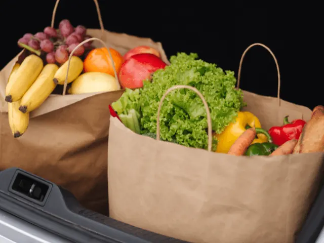
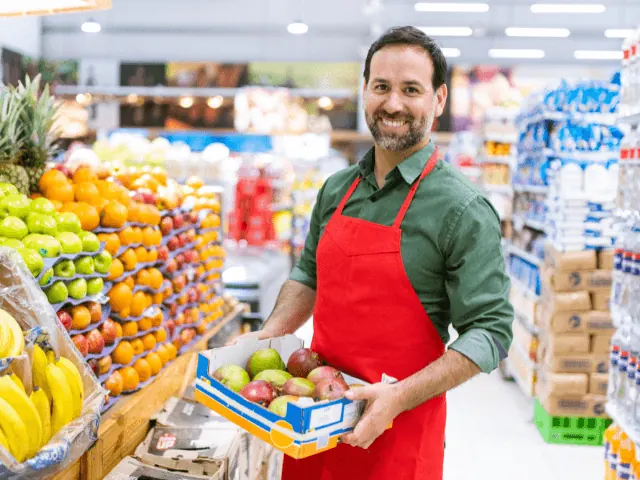

Partnerbijdrage
Besparen op boodschappen? Volg deze 5 top tips!
Gepubliceerd op 4 januari 2023, bijgewerkt op 14 september 2023

Op 9 december berichtte de Rabobank dat de boodschappen in 2023 nog duurder gaan worden. En dat terwijl de gemiddelde consument binnen een paar maanden tijd een prijsstijging te verduren heeft gehad van 18.5 procent. Zowel voor pasta, brood, melk, kaas en zonnebloemolie moeten we flink wat meer geld neertellen. Hoog tijd om te gaan besparen op de boodschappen. Maar hoe doe je dat? Lees onze 5 tips om aan het einde van de maand meer (boodschappen)geld over te houden.
Tip 1: Maak een boodschappenlijstje
Maak een boodschappenlijstje en houd je eraan. Het klinkt zo simpel, maar lang niet iedereen doet dit. Neem voordat je naar de winkel gaat een paar minuten de tijd om een lijstje te maken van alles wat je nodig hebt. Een boodschappenlijstje is een ideaal hulpmiddel om er voor te zorgen dat je bepaalde artikelen niet vergeet. Minstens zo belangrijk is dat je er impulsaankopen mee vermijdt. Je houd je veel sneller aan het budget omdat je precies weet wat je moet kopen.
Hoe maak je een goed boodschappenlijstje?
Een boodschappenlijstje opstellen kost maar enkele minuten en bespaart je een hoop geld. Denk eerst na over wat je moet kopen. Welke maaltijden wil je de komende week maken? Zet ook de snacks, huishoudelijke artikelen en verzorgingsproducten die je nodig hebt. Schrijf elk item op je lijstje en wees daarbij zo specifiek mogelijk. In plaats van alleen ‘kip’ te schrijven, specificeer je bijvoorbeeld het soort kip. Denk bijvoorbeeld aan ‘kippenbouten’ of ‘kippenvleugels’. Vergeet daarbij niet om de hoeveelheid die je nodig hebt, bijvoorbeeld 1 kilo, op te schrijven.
Rangschik per categorie
Rangschik vervolgens je lijst per categorie. Dit maakt het gemakkelijker om bepaalde producten in de winkel te vinden en zorgt ervoor dat je niets vergeet. Veel voorkomende categorieën zijn vlees, vis, zuivel, granen en pasta, specerijen en kruiden en huishoudelijke artikelen.
Deel het lijstje op in prioriteiten
Deel het lijstje ook op in prioriteiten. Zet de belangrijkste items bovenaan, zodat je die zeker niet vergeet. Zet eventueel een sterretje naast artikelen die in de aanbieding zijn of die je binnenkort moet vervangen. Zo kun je geld besparen en voorkomen dat je zonder onmisbare producten komt te zitten.
Tip: Gebruik een smartphone om een boodschappenlijstje mee te maken
Papier weggooien is best zonde. Helemaal wanneer je het gebruikt voor een boodschappenlijstje. Je kunt tegenwoordig prima je smartphone app gebruiken als je naar de supermarkt gaat. Dit bespaart papier en maakt het gemakkelijk om naar behoefte items toe te voegen en te verwijderen. Bovendien kun je een digitale lijst eenvoudig delen met anderen, zodat iedereen weet wat hij of zij moet kopen. Wist je dat er tegenwoordig zelfs speciale apps zijn voor boodschappenlijstjes? Een kleine greep:
- Listonic
- Bring!
- Out of Milk
- Supersimpel
- Sjoprz
Een goed gepland boodschappenlijstje bespaart een hoop zorgen
Een goed gepland boodschappenlijstje bespaart jou een hoop tijd, geld en stress. En dat willen we allemaal wel in dezere tijden toch? Door vooruit te denken, je lijstje te organiseren en gefocust te blijven in de winkel, haal je alle artikelen die je nodig hebt voor een heerlijke en voedzame maaltijd in huis. Misschien wil je graag nog weten welke supermarkten nu het goedkoopst zijn. De Consumentenbond deed onderzoek en daar kwam het volgende lijstje uit:
1 – Dirk van den Broek
2 – Hoogvliet
3 – Vomar
4 – Dekamarkt
5 – Deen
6 – Jumbo
7 – Lidl
8 – Aldi
9 – Albert Heijn
10 – Picnic
11 – Plus
12 – Coop
13 – Spar

Tip 2: Vergelijk prijzen met elkaar
Hoog tijd voor tip nummer 2. Kijk goed rond voor de beste prijzen om de allerbeste deals te scoren.Ga er niet van uit dat de dichtstbijzijnde supermarkt de goedkoopste producten heeft. Nee, neem in plaats daarvan tijd om de prijzen bij verschillende supermarkten te vergelijken. Vaak vind je na een korte online zoektocht al de beste deals. Wil je echt besparen? Dan is het vast niet erg om 5 of 10 minuten verder te rijden naar die ene supermarkt met korting. En wist je dat er apps bestaan waarmee je in een handomdraai veel geld kunt besparen op de boodschappen? Deze 5 zijn erg populair:
- Sjoprz: Geeft onder andere aan bij welke supermarkten je een bepaald product het goedkoopste kan halen
- Appie: De app van Albert Heijn geeft onder andere aan welke producten er in de aanbieding zijn
- Hiiper: Vergelijkt de prijzen van verschillende supermarkten met elkaar.

Tip 3: Profiteer zoveel mogelijk van aanbiedingen
Veel supermarkten bieden regelmatig korting aan op bepaalde artikelen. Zo klinkt ‘AH Bonus’ jou waarschijnlijk wel bekend in de oren. Let op mooie aanbiedingen wanneer je boodschappen doet. Ook is het handig om je aan te melden voor nieuwsbrieven. De meeste supermarkten hebben er wel een. Vaak geven ze aan welke producten er nu en binnenkort in de aanbieding zijn. En vergeet niet om de social media pagina’s van supermarkten te volgen om op de hoogte te blijven van kortingen.
Niet elke aanbieding hoeft in jouw boodschappenmandje te belanden
Aanbiedingen zijn mooi, maar je hoeft echt niet elk product te kopen met een kortingssticker. Maak er alleen gebruik van als je een product écht nodig hebt. Anders kom je toch teveel in de verleiding om impulsaankopen te doen. Bovendien zijn ongezonde producten opvallend vaak in de aanbieding. Sterker nog: uit onderzoek van de NOS stimuleert 80 procent van de supermarkten ongezonde voeding, zoals chips, taart en koekjes. Lekker laten liggen dus!
Tip 4: Koop geen merkartikelen
Merkloze producten zijn vaak net zo goed als merkproducten, maar meestal goedkoper. Dus als je de volgende keer in de supermarkt bent, overweeg dan om het winkelmerk van je favoriete producten te kopen. Deze zijn vaak goedkoper en dat scheelt in de portemonnee. Tip: in de meeste supermarkten zijn de goedkope producten onderaan het schap te vinden.
Tip 5: Koop geen voorgesneden groentes
Groenten zijn hartstikke gezond, dat weten we allemaal. Maar het kost wel tijd om ze te bereiden. Zodoende kiezen veel mensen er voor om voorgesneden zakjes te kopen. Hetzelfde geldt voor aardappelen. Waarom zou je aardappelen schillen als je ook een zak aardappelschijfjes kunt kopen? De reden is simpel: niet-voorgesneden groentes en ongeschilde aardappelen zijn veel goedkoper! Bovendien zit er vaak nog veel meer in ook en blijft het langer goed. Je hoeft dus minder snel eten weg te gooien. Een fijne gedachte, aangezien dit beter is voor het milieu.